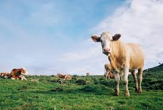
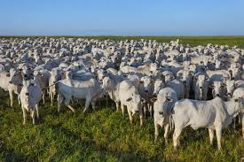
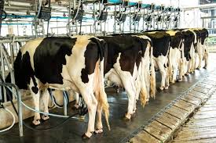

O Agrinho 2025 destaca a importância das vacas na produção sustentável de leite e carne, incentivando práticas responsáveis no campo com educação e consciência ambiental.
Galeria de Vacas



Vacas, Educação e Sustentabilidade no Campo
O Agrinho 2025 destaca a importância das vacas na produção sustentável de leite e carne, incentivando práticas responsáveis no campo com educação e consciência ambiental.